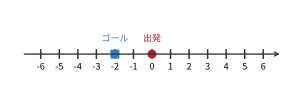

別冊章末問題の解答
1. 1個のさいころを6回投げて、1の目がちょうど3回出る確率と、1の目が少なくとも1回出る確率を求めよ。
（例題1の型）
【答案】
\[\dfrac{625}{11664},\ \dfrac{31031}{46656}\]答
2. 4個のさいころを同時に投げるとき、出る目の積が4の倍数になる確率を求めよ。
（例題2の型）
【答案】
\[\dfrac{37}{48}\]答
3. 先に4勝した方が優勝する。各試合でAが勝つ確率は \(\dfrac13\)。A が2勝、B が1勝の時点から A が優勝する確率を求めよ。
（例題3の型）
【答案】
\[\dfrac{11}{27}\]答
4. 赤玉4個、白玉4個、青玉2個の袋から同時に4個取り出すとき、3色すべて出る確率を求めよ。
（例題4の型）
【答案】
\[\dfrac8{15}\]答
5. 6人でじゃんけんを1回するとき、勝者がちょうど2人になる確率を求めよ。
（例題5の型）
【答案】
\[\dfrac5{81}\]答
6. 数直線上の原点にある点 \(P\) が、硬貨を投げて表が出れば \(+1\)、裏が出れば \(-1\) だけ移動する。硬貨を \(6\) 回投げたとき、\(P\) が座標 \(-2\) にある確率を求めよ。
動きを数える
表で \(+1\)、裏で \(-1\) 動く。\(6\) 回のうち表が \(r\) 回なら位置は \(r-(6-r)=2r-6\)。

表の回数
\[2r-6=-2\ \Rightarrow\ r=2\]確率
表が \(2\) 回の確率（反復試行）。
\[{}_{6}\mathrm{C}_{2}\left(\dfrac12\right)^{6}=\dfrac{15}{64}\]（例題6の型）
【答案】
\[\dfrac{15}{64}\]答
7. 赤玉 \(5\) 個と白玉 \(5\) 個が入った袋から、同時に \(3\) 個の玉を取り出すとき、赤玉がちょうど \(2\) 個である確率を求めよ。
全体
\(10\) 個から3個を同時に取り出す：
\[{}_{10}\mathrm{C}_3=120\]赤 2 個・白 1 個を取り出す
\[{}_{5}\mathrm{C}_{2}\times{}_{5}\mathrm{C}_{1}=10\times5=50\]確率
\[\dfrac{50}{120}=\dfrac{5}{12}\]（例題7の型）
【答案】
\[\dfrac{5}{12}\]答
8. 当たりが \(5\) 本入った \(15\) 本のくじを、\(A,\ B\) の2人がこの順に1本ずつ引く（引いたくじは戻さない）。少なくとも1人が当たる確率を求めよ。
2人目も \(\dfrac an\)
くじは引く順に関係なく、1人目が当たる確率も2人目が当たる確率も \(\dfrac{5}{15}\)。
余事象
「少なくとも1人当たる」の余事象は2人ともはずれる。
\[\dfrac{10}{15}\times\dfrac{9}{14}=\dfrac{3}{7}\]答え
\[1-\dfrac{3}{7}=\dfrac{4}{7}\]（例題8の型）
【答案】
\[\dfrac{4}{7}\]答
9. さいころを \(6\) 回投げて、出た目の積が \(6\) の倍数になる確率を求めよ。
余事象
「積が6の倍数」でない = 「積が2の倍数でない」または「3の倍数でない」。
それぞれの確率
積が2の倍数でない（すべて奇数）：\(\left(\dfrac12\right)^{6}\)。積が3の倍数でない（3,6が出ない）：\(\left(\dfrac23\right)^{6}\)。両方（1か5だけ）：\(\left(\dfrac13\right)^{6}\)。
包除
\[1-\left\{\left(\dfrac12\right)^{6}+\left(\dfrac23\right)^{6}-\left(\dfrac13\right)^{6}\right\}=\dfrac{4655}{5184}\]（例題9の型）
【答案】
\[\dfrac{4655}{5184}\]答
10. 1回の試行で成功する確率が \(\dfrac{3}{5}\) の試行を \(11\) 回くり返すとき、成功の回数が \(k\) である確率が最大となる \(k\) を求めよ。
隣り合う項の比
\(P_k={}_{11}\mathrm{C}_{k}\left(\dfrac{3}{5}\right)^k\left(\dfrac{2}{5}\right)^{11-k}\)。
\[\dfrac{P_{k+1}}{P_k}=\dfrac{11-k}{k+1}\cdot\dfrac{\dfrac{3}{5}}{\dfrac{2}{5}}=\dfrac{11-k}{k+1}\cdot\dfrac{3}{2}\]増える・減る
\(\dfrac{P_{k+1}}{P_k}>1\) となる \(k\) の範囲を調べる。
\[\dfrac{3}{2}(11-k)>k+1\ \iff\ k<\dfrac{31}{5}\]最大になる \(k\)
\(k=7\) で最大。
\[P_{7}=\dfrac{2309472}{9765625}\]（例題10の型）
【答案】
\[k=7\]答